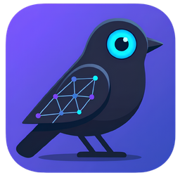
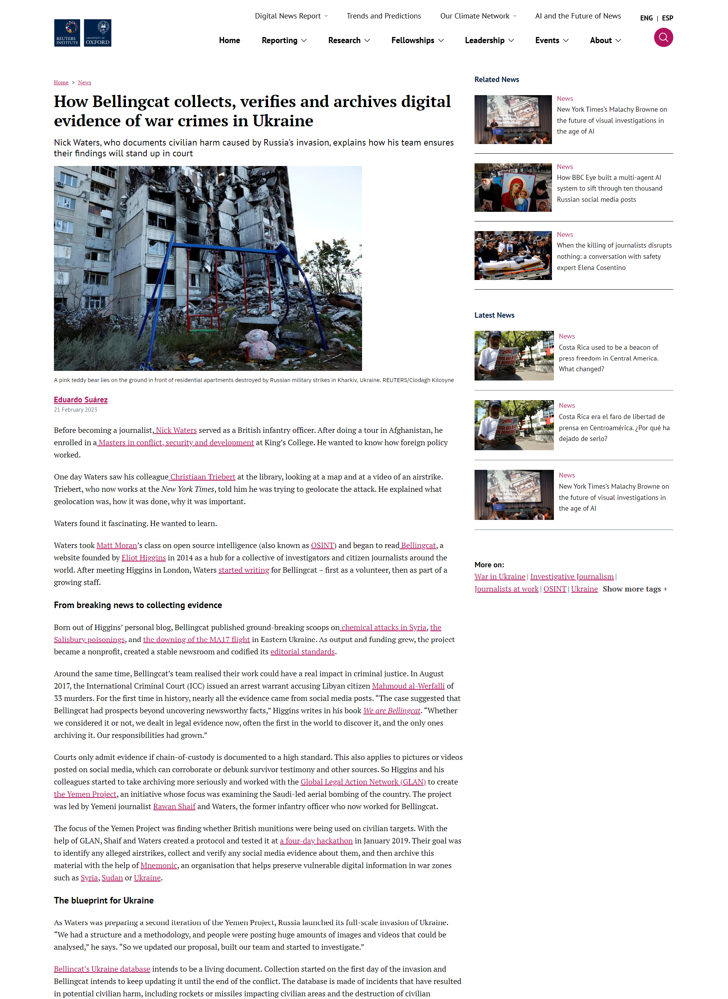

Birdbrain
{{ crumb }}
{{ syncLine }}
Export
Cases
{{ caseCountLine }}
New case
{{ activeCaseName }}
Capture
{{ capHint }}
{{ onboardText }}
{{ c.name }}
{{ c.status }}
{{ c.captures }}
·
{{ c.selectors }}
·
{{ c.size }}
{{ c.touched }}
{{ c.exText }}
{{ selTitle }}
Background
{{ selRecaptureText }}
{{ t.label }}
{{ posLine }}
{{ selUrl }}

Style
Stroke
{{ stroke }}
{{ zoomLine }}
Fit
1:1
{{ pageMode }}
{{ pageNote }}
{{ l.n }}
{{ l.text }}
{{ l.n }}
{{ l.pre }}
{{ l.hit }}
{{ l.post }}
{{ stubTitle }}
{{ stubNote }}